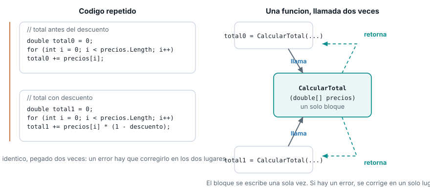
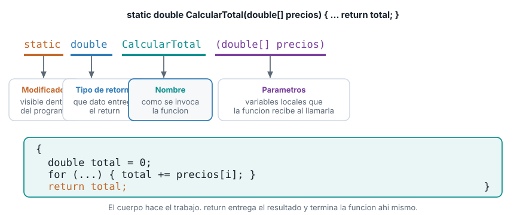
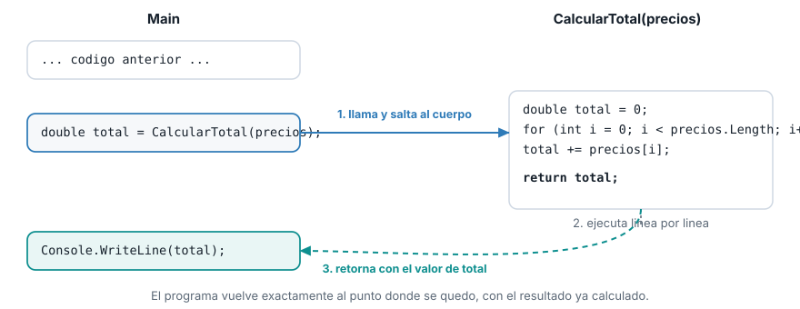

Unidad 2. Funciones: parámetros de entrada y valor de retorno
| Asignatura | Herramientas de Programación I (ET0047) |
| Programa | Tecnología en Desarrollo de Software |
| Unidad | Unidad 2. Creando aplicaciones informáticas utilizando arreglos y funciones |
| Saber | Funciones: parámetros de entrada y valor de retorno |
Esta guía se probó con el SDK de .NET 10.0.302.
1 El problema que resuelve una función
En el tema anterior calculaste el total de un vector de precios con un for que suma sobre precios.Length. Ese cálculo no aparece una sola vez en un sistema de gestión real: aparece cada vez que hace falta un total. Por ejemplo, una vez para mostrar el total antes de aplicar un descuento, y otra vez para mostrar el total después:
double[] precios = { 4599.90, 12999.00, 8500.50, 2300.00, 15750.75 };
double totalOriginal = 0;
for (int i = 0; i < precios.Length; i++)
{
totalOriginal += precios[i];
}
Console.WriteLine($"Total antes del descuento: {totalOriginal}");
double descuento = 0.10;
double totalConDescuento = 0;
for (int i = 0; i < precios.Length; i++)
{
totalConDescuento += precios[i] * (1 - descuento);
}
Console.WriteLine($"Total con descuento: {totalConDescuento:F2}");Total antes del descuento: 44150,15
Total con descuento: 39735,14Mira el segundo for: es casi idéntico al primero, solo cambia una línea. Copiarlo y pegarlo funciona hoy, pero deja dos copias del mismo cálculo sueltas en el programa. Si mañana encuentras un error en la forma de sumar, o cambias el tipo de dato, tienes que acordarte de corregirlo en los dos lugares. Y esto no se queda en dos copias: cada vez que el sistema de gestión necesite un total en otro punto (un reporte, una validación, un resumen), aparece una tercera, una cuarta copia del mismo bloque.

Lo que falta es una forma de escribir un bloque de código una sola vez, ponerle un nombre, y poder invocarlo cuantas veces haga falta desde cualquier parte del programa. Eso es una función.
2 Qué es una función en C
Una función (en C# también se le llama método) es un bloque de código con nombre que se puede invocar las veces que haga falta, desde distintos lugares del programa, opcionalmente recibiendo datos de entrada y opcionalmente devolviendo un resultado.
Dos acciones quedan separadas, y conviene no confundirlas:
- Declarar (o definir) la función. Escribir su código una sola vez, con su nombre, en algún lugar del programa. Esto no ejecuta nada todavía: solo deja el bloque disponible.
- Llamar (o invocar) la función. Escribir el nombre de la función seguido de paréntesis en el punto del programa donde quieres que se ejecute. Cada llamada ejecuta el mismo código declarado una sola vez, tantas veces como lo llames.
Es la misma relación que ya conoces entre un vector y sus posiciones: declaras precios una vez, y accedes a precios[2] tantas veces como necesites. Con una función, declaras CalcularTotal una vez, y la llamas tantas veces como necesites un total.
3 Anatomía de una función
Toda función en C# se escribe con la misma forma: una firma (la línea que la declara) seguida de un cuerpo entre llaves. La firma tiene cuatro partes fijas, en este orden:

- Modificador de acceso. En este curso vas a escribir siempre
static. Significa que la función no pertenece a un objeto particular (todavía no viste programación orientada a objetos, eso llega en la Unidad 3): es una función suelta, disponible en todo el programa. - Tipo de retorno. El tipo de dato que la función va a entregar como resultado. Puede ser cualquier tipo que ya conoces (
double,int,string,bool, un vector) ovoid, que significa “esta función no entrega ningún resultado”. - Nombre. Cómo se va a invocar la función. En C# se escribe en
PascalCase(cada palabra con mayúscula inicial), a diferencia de las variables, que van encamelCase. - Parámetros. La lista de datos que la función necesita recibir para hacer su trabajo, entre paréntesis, cada uno con su tipo. Puede estar vacía.
Con esa anatomía, el cálculo del total del principio de la guía se convierte en una función:
static double CalcularTotal(double[] precios)
{
double total = 0;
for (int i = 0; i < precios.Length; i++)
{
total += precios[i];
}
return total;
}static double CalcularTotal(double[] precios) es la firma: una función llamada CalcularTotal, sin pertenecer a un objeto (static), que recibe un vector de double llamado precios y devuelve un double. El cuerpo es exactamente el mismo for que ya conocías, ahora encerrado en un solo lugar.
4 Parámetros de entrada
Un parámetro es una variable local que la función recibe con un valor en el momento en que es llamada. Se declara en la firma, con su tipo y su nombre, igual que cualquier variable. En CalcularTotal(double[] precios), precios es el único parámetro: un vector de double.
Cuando llamas la función, el valor real que le pasas se llama argumento. La distinción importa para hablar con precisión: precios en la firma es el parámetro; el vector que efectivamente le pasas al llamarla es el argumento.
double[] precios = { 4599.90, 12999.00, 8500.50, 2300.00, 15750.75 };
double total = CalcularTotal(precios);
Console.WriteLine($"Total del vector: {total}");Total del vector: 44150,15Aquí precios (la variable del programa) es el argumento que se pasa; dentro de CalcularTotal, ese mismo valor se recibe con el nombre del parámetro, también precios (el nombre puede coincidir o no, C# no exige que sean iguales).
Una función puede tener cero, uno o varios parámetros, separados por comas en la firma. Por ejemplo, una versión que además reciba el porcentaje de descuento a aplicar:
static double CalcularTotalConDescuento(double[] precios, double porcentajeDescuento)
{
double total = CalcularTotal(precios);
return total * (1 - porcentajeDescuento);
}Esta función recibe dos parámetros: el vector precios y el double porcentajeDescuento. Por dentro, reutiliza CalcularTotal en vez de repetir el for: una función puede llamar a otra función, igual que cualquier otro código puede hacerlo.
double totalConDescuento = CalcularTotalConDescuento(precios, 0.10);
Console.WriteLine($"Total con 10% de descuento: {totalConDescuento:F2}");Total con 10% de descuento: 39735,14Los argumentos se pasan en el mismo orden en que están declarados los parámetros: el primer argumento (precios) llena el primer parámetro, el segundo argumento (0.10) llena el segundo parámetro (porcentajeDescuento). Invertir el orden al llamar la función, cuando los tipos no coinciden, es un error que el compilador detecta antes de ejecutar el programa.
5 Valor de retorno
return es la palabra clave que entrega el resultado de la función y termina su ejecución en ese punto exacto, aunque queden líneas de código después. El tipo del valor que sigue a return debe coincidir con el tipo de retorno declarado en la firma: CalcularTotal declara double, así que return total; solo es válido porque total es double.
No toda función necesita devolver algo. Cuando el tipo de retorno es void, la función no entrega ningún resultado: hace su trabajo (por ejemplo, imprimir algo en pantalla) y termina sola, sin return, o con un return; sin valor si necesitas cortarla antes de tiempo.
static void MostrarVector(double[] vector, string etiqueta)
{
Console.WriteLine(etiqueta);
foreach (double valor in vector)
{
Console.WriteLine($" {valor}");
}
}MostrarVector(precios, "Precios del inventario:");Precios del inventario:
4599,9
12999
8500,5
2300
15750,75MostrarVector no tiene return: imprime y termina. Compárala con CalcularTotal: una calcula y entrega un valor para que quien la llamó lo use; la otra hace algo (imprimir) y no entrega nada de vuelta.
return también sirve para cortar una función antes de llegar al final, típicamente dentro de un if. Una función que revisa si todos los precios de un vector son válidos (ninguno negativo) puede salir apenas encuentra uno que no lo es, sin revisar el resto:
static bool TienePreciosValidos(double[] precios)
{
foreach (double precio in precios)
{
if (precio < 0)
{
return false;
}
}
return true;
}double[] preciosValidos = { 4599.90, 12999.00, 8500.50 };
double[] preciosConError = { 4599.90, -50.0, 8500.50 };
Console.WriteLine($"preciosValidos: {TienePreciosValidos(preciosValidos)}");
Console.WriteLine($"preciosConError: {TienePreciosValidos(preciosConError)}");preciosValidos: True
preciosConError: FalseEl return false; de adentro del if corta la función de inmediato, apenas encuentra el primer precio negativo: no sigue revisando el resto del vector. Si el foreach termina sin encontrar ninguno negativo, se llega al return true; final. Una función puede tener más de un return, pero solo se ejecuta uno por cada llamada: el primero que se alcanza.
6 Llamar una función desde Main
Invocar una función con retorno y una función void se ve distinto en el punto de llamada. Con retorno, normalmente asignas el resultado a una variable (double total = CalcularTotal(precios);) o lo usas directo dentro de otra expresión. Una función void se llama como una sentencia suelta, sin asignarla a nada, porque no hay ningún valor que recibir.
Lo que pasa por dentro, en cualquiera de los dos casos, sigue siempre el mismo flujo:

El programa nunca ejecuta las dos cosas a la vez: se detiene en la línea de la llamada, salta al cuerpo de la función, ejecuta ese cuerpo de principio a fin (o hasta el primer return que encuentre), y regresa exactamente a la línea siguiente a la llamada, llevando el valor de retorno si lo hay. El resto del programa continúa como si el cuerpo de la función se hubiera escrito ahí mismo, sin la repetición.
7 Lo que sigue: paso de parámetros por valor y por referencia
Todos los parámetros de esta guía fueron datos que la función lee: calcula un total, revisa si son válidos, los imprime. Pero MostrarVector recibe el vector completo como parámetro. Eso abre una pregunta que todavía no respondiste: ¿qué pasa si una función modifica el vector que recibió como parámetro? ¿El cambio se queda solo adentro de la función, o se nota también afuera, en el Main que la llamó? Esa es la pregunta que abre el siguiente tema.
8 Lista de verificación
9 Recursos
- Métodos en C#: learn.microsoft.com/dotnet/csharp/methods
- Parámetros de método: learn.microsoft.com/dotnet/csharp/programming-guide/classes-and-structs/method-parameters
- Sentencia
return: learn.microsoft.com/dotnet/csharp/language-reference/statements/jump-statements
Herramientas de Programación I (ET0047). Institución Universitaria Pascual Bravo. Facultad de Ingeniería. Semestre 2026-02.
Transparencia. La redacción de esta guía contó con el apoyo de inteligencia artificial, usando el modelo Claude Sonnet 5 de Anthropic. Todo el contenido fue revisado y validado. Las salidas de terminal son reales, obtenidas ejecutando el código exacto de esta guía contra el SDK de .NET 10.0.302.